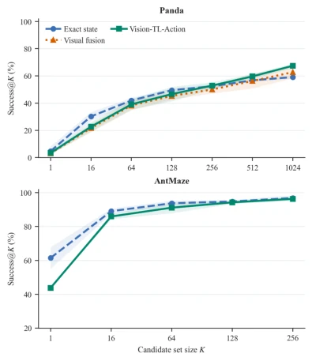
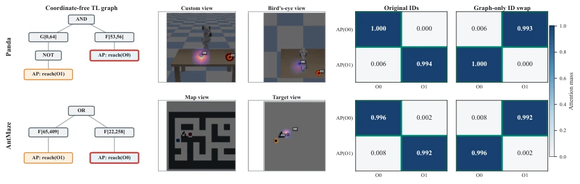
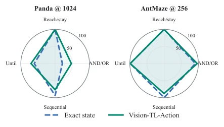
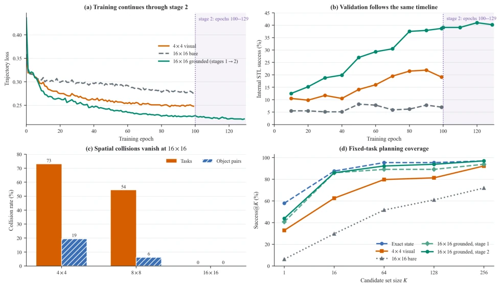
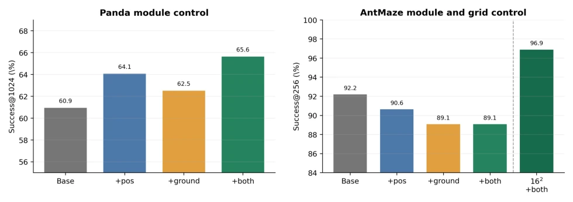
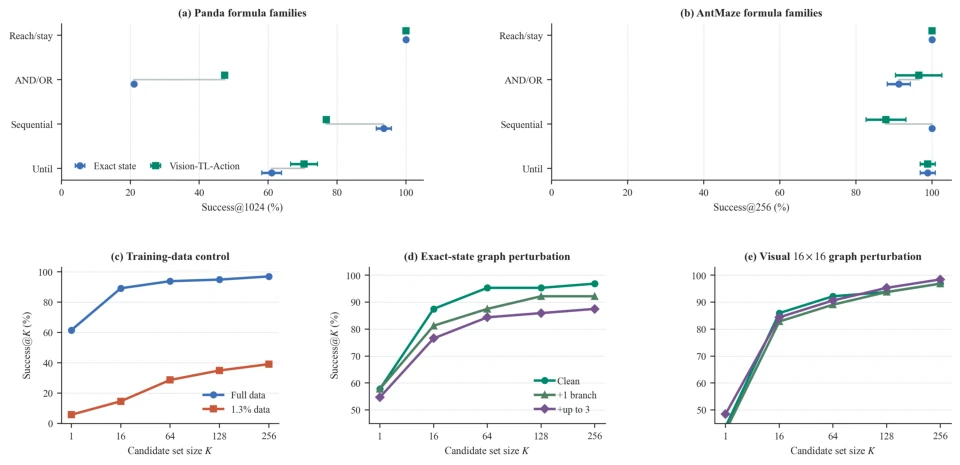
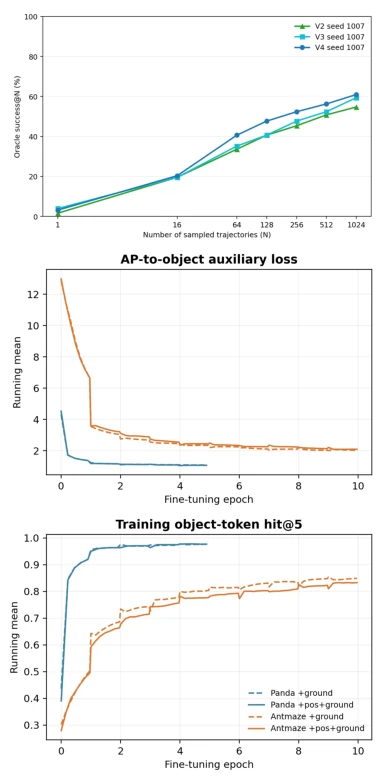
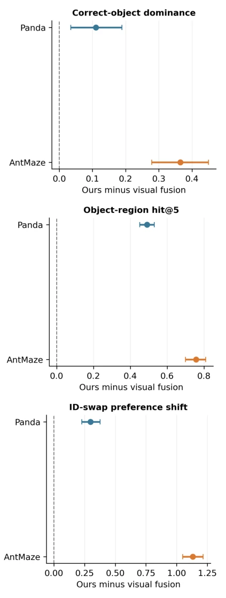

Figure 1: System overview of Vision-TL-Action. The model encodes a coordinate-free TL graph and multi-view visual observations into TL node and visual tokens, fuses them through bidirectional cross-attention, and conditions a flow-matching Temporal U-Net on the fused feature and encoded initial state to generate candidate trajectories by ODE integration.
Figure 2: Final-checkpoint visual-input interventions at seed 1007. Bars report fixed-task success and error bars are 95% task-bootstrap intervals. Panda retains substantial informa- tion in either camera, whereas AntMaze depends primarily on the task-specific target raster.

Figure 3: Three-seed Success@K over shared candidate pre- fixes. Exact state produces stronger single samples, especially on AntMaze, while the proposed visual model closes or re- verses the gap as candidate diversity increases. The bands show one sample standard deviation across sampling seeds. Panda also includes its same-resolution visual-fusion base- line.

Figure 4: Graph-to-vision grounding in Panda (top) and AntMaze (bottom). The TL nodes state their operator, interval, predicate, and object identity. The two visual columns show Panda custom and bird’s-eye views and AntMaze map and target views. Outlined matrix cells mark the graph-consistent object; a graph-only identity exchange moves the dominant correspondence while both visual views remain fixed.

Figure 5: Three-seed mean Success@K by TL formula family at the maximum candidate set size. The four axes are reach/stay, conjunction/disjunction, sequential, and until tasks; values are percentages on the same fixed task parti- tions used in Table 1.
其他图片Other Figures

Figure 6: AntMaze representation-resolution diagnostic. The first training stage occupies epochs 0–99; the 30-epoch condition- interface adaptation is plotted continuously at epochs 100–129 rather than restarting the horizontal axis. Increasing spatial resolution eliminates target-token collisions, while position/view encoding and predicate grounding convert that resolution into planning performance.

Figure 7: Controlled seed-1007 module study. Position encoding and grounding are complementary on Panda. On the collision- prone 4 × 4 AntMaze grid, the same modules cannot recover planning performance; moving to native 16 × 16 tokens makes their semantic supervision actionable.

Figure 8: Compact task and robustness diagnostics. Top: three-seed performance by TL formula family. Bottom: training-data sufficiency and the same redundant syntax-branch intervention applied to exact-state and final visual checkpoints. All curves use nested candidate prefixes.

Figure 9: Development and grounding diagnostics. Top: Panda internal checkpoint progression at seed 1007; V2, V3, and V4 denote node fusion, final-block adaptation, and condition-interface adaptation. Bottom: grounding-stage op- timization, where solid lines include spatial position encod- ing and dashed lines omit it. The AntMaze curves use the earlier 4×4 gate and motivate the native 16×16 experiment.

Figure 10: Paired grounding improvements over visual fu- sion. Points are mean task-level differences and bars are 95% bootstrap intervals.